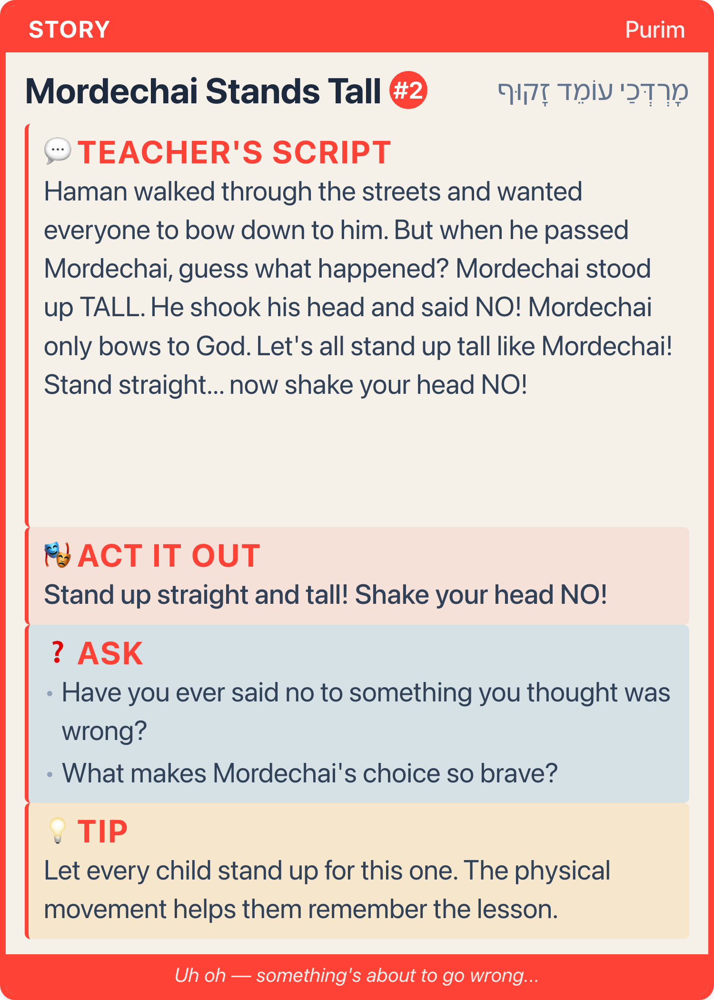

All 7 back types for Purim, drawn at ⅓ of print size (the real card is 5×7 in, 1500×2100 px). Each one is written to fit the new word limits: a goal of 10 words or fewer, SAY in 50 words or fewer, and at most 2 questions. The teacher reads it top to bottom. Background, extra activities, and "what happened to Haman?" are in the printed teacher guide.

Haman wanted EVERYONE to bow down to him.
Everyone bow!
But Mordechai said, "I am a Jew. I will not bow to you."
Stand up tall!
Mordechai… stood… TALL. Freeze!
Hold the card up high
Look at this crown! Who wears a crown?
It belongs to Queen Esther. Esther had a big secret… and one day she had to be very, very brave.
Hands on hearts Let's find out!
Point to Esther's face
This is Queen Esther. Sometimes Esther felt a little scared…
Shaky hands
…but she was brave anyway! Strong arms!
Being brave means doing the right thing, even when you feel scared.
Esther felt scared, and she was brave anyway.
Share one brave moment of your own
Now it's your turn. When were YOU brave?
Pass the card to whoever is sharing
On Purim we listen to the Megillah, the story of Esther.
When we hear the name "Haman," we make noise so nobody can hear his name!
Say "Haman" — everyone shakes
When I say "Esther"… FREEZE! Repeat 3×
Our Hebrew word is gibor. It means hero! Strong arms!
A girl hero is a giborah. Esther was a giborah!
Say it with me: gee-BOR! Louder… LOUDER!